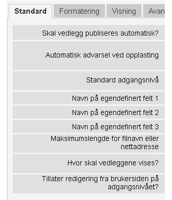
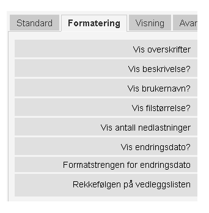
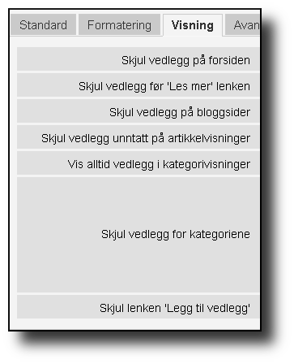
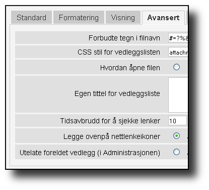
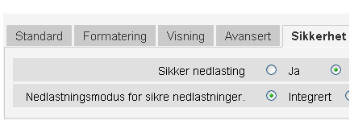
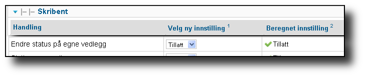
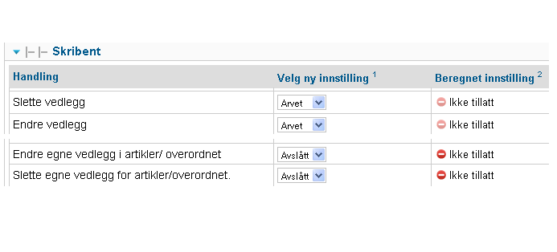

Version 3.0.3 - 11. august 2012
Denne versjonen er for Joomla 1.7/2.5+
Contents
- Introduksjon
- Nye funksjoner i versjon 3.0
- Viktige funksjoner
- Opplastingsrestriksjoner
- Innstillinger
- Rettigheter i Artikkelvedlegg
- Visningsrettigheter
- Vise filnavn eller nettadresse
- Legg til nettadresse
- Hvor kan filer vises som vedlegg?
- CSS formatering av vedleggslister
- Type filikoner
- Administrative verktøykommandoer
- Advarsler
- Oppdatering
- Avinstallere
- Migrering av Artikkelvedlegg fra Joomla 1.5 til Joomla 1.7/2.5+
- Oversettelser
- Takk til
- Kontakt
Introduksjon
Programutvidelsen "Attachments" (Artikkelvedlegg) til Joomla! gjør det mulig å legge ved filer til artikler eller til annen type innhold. Inkludert er et programtillegg for å vise vedleggene og en komponent for opplasting og administrasjon av vedleggene, pluss andre programtillegg. Det er mulighet for å kontrollere hvem som skal ha tilgang til å se vedlegg, og hvem som skal ha tilgang til å laste dem opp, i tilegg er det flere andre muligheter for å øke fleksibilitet og bruksområdet. Merk: alle innstillinger styres fra komponentmenyen.
Advarsel
Denne versjonen av Artikkelvedlegg fungerer kun med Joomla! 1.7, 2.5 eller nyere.
Merk
I dette dokumentet blir begrepet innholdselementet noen ganger brukt. Normalt vil vi tenke å legge inn vedlegg til artikler. Denne komponenten støtter også vedlegg av filer og nettadresser til artikler eller kategorier som standard. Men det er fullt mulig å koble til andre typer innholdstyper (dette krever spesiell programtillegg). Alle disse er referert til som innholdelementer.
Programutvidelsen "Artikkelvedlegg" har blitt oversatt til mange forskjellige språk. Se oversettelser for listen over tilgjengelige oversettelser. De fleste av disse språkene er i ferd med å bli oppdatert til versjon 3.0.
Ønsker du å abonnere på kunngjøringer om denne komponenten, kan du abonnere ved hjelp av denne nettsiden:
Nye funksjoner i versjon 3.0
- Full støtte for det nye ACL/rettighetssystem i Joomla 1.7/2.5+. Dette gir deg betydelig fleksibilitet til å kontrollere hvem som kan opprette, redigere eller slette vedlegg. Se avsnittet om Rettigheter for mer informasjon.
- Full støtte for visningsrettigheter. Dette betyr at du kan angi noen av vedleggene å være synlig for noen, og andre bare skal være synlige for brukere i visse grupper (som definert i Tilgangsnivåer). Se avsnittet om Visningsrettigheter for mer informasjon.
- Enklere og bedre alternativer for å skjule vedlegg i ulike sammenhenger.
Viktige funksjoner
Du kan administrere vedlegg fra artikkelen, inkludert å legge til, redigere og slette vedlegg.
Du kan opprette vedlegg før en artikkel blir lagret.
Alle vedleggslister blir nå oppdatert av Ajax uten at det kreves at siden lastes på nytt.
Du kan nå "legge til" nettadresser samt filer til innholdselementene.
Du kan nå vise vedleggene hvor som helst i en artikkel (eller innholdselement).
- I Administrasjonen:
- Det er et alternativ for å skjule vedleggslisten til upubliserte eller slettede artikler eller innholdselementer.
- Filtrering av listen over artikler
- Sortere listen over vedlegg på alle kolonneoverskriftene.
- Nyttige administrative verktøykommandoer
Vedleggskomponentene støtter programtillegg. Disse programtilleggene tillater vedlegg i innholdselement som bruker programtillegget onPrepareContent. For eksempel kan du nå legge ved filer til kategoribeskrivelser. Med litt arbeid, er det nå mulig å lage nye programtillegg for å støtte vedlegg i utvidelser som CB for og f.eks å vise personlig info, Virtuemart produktbeskrivelser, etc. Se punkt Hvor kan filer vises som vedlegg? for mer informasjon.
Opplastingsrestriksjoner
Ikke alle filtyper kan lastes opp. "Artikkelvedlegg" vil kun tillate filtyper som er definert i Joomla!`s Mediabehandler. For å se (og endre) tillatte filtyper gå til Media på menyen Innhold, klikk på knappen Innstillinger og velg fanen Komponent. Der kan du kontrollere hvilke filendelser og mime-typer som er tillatt for opplasting. "Artikkelvedlegg" tar hensyn til disse begrensningene, med unntak av "Tillatte filendelser (filtyper)" da disse blir ignorert. Legg til filtyper som du trenger i feltet "Tillatte filendelser (filtyper)". Du kan også legge til passende MIME-typer i feltet "Tillatte MIME-typer".
Advarsel
Det skal IKKE være mellomrom mellom filendelser i "Tillatte filendelser" eller "Tillatte MIME-typer".
Innstillinger
Alle innstillinger for "Artikkelvedlegg" kan endres i kontrollpanelet til komponenten. For å endre på disse, gå til administrasjonssiden, velg "Artikkelvedlegg" under menyen "Komponenter". Klikk på knappen "Innstillinger" på verktøylinjen så kommer du til alle parametrene som er gruppert på de forskjellige fanene.
Standard
Skal vedlegg publiseres automatisk?: Med denne "automatiske" funksjonen bestemmes det om vedlegg skal som standard publiseres automatisk når nye vedlegg blir lagt til. Dersom du velger "Ja" vil vedleggene være synlige for brukere umiddelbart etter opplasting. Velger du "Nei" vil de ikke bli publisert. En administrator må publisere de fra Administrasjonen før vedleggene vil være tilgjengelig.
Automatisk advarsel ved opplasting: Dersom du velger å deaktivere automatisk publisering (se over), har du her muligheten til å legge til en melding som forklarer fremgangsmåten for manuell publisering. Dersom du lar dette feltet stå tomt vil brukerne få en generell feilmelding som foreslår at de skal kontakte en administrator for å få hjelp til publiseringen.
Standard adgangsnivå: Standard adgangsnivå for nye vedlegg. Hvert vedlegg har et "adgangsnivå" som styrer hvem som kan se eller laste ned vedlegg. Når et vedlegg opprettes, settes adgangsnivået til denne standardverdien (dersom den som oppretter vedlegget er i en passende grupper). En administrator eller noen med riktige rettigheter kan endre vedlegget adgangsnivå for å kontrollere hvem som kan se hvert spesifikke vedlegg.
Navn på egendefinert felt 1-3: Dersom du har annen informasjon om hvert vedlegg som du ønsker å legge til kan du definert opptil tre valgfrie brukerdefinerte felt. Dersom du vil opprette et nytt felt, skriver du inn navnet i et av de tre feltene. Ett felt uten tekst deaktiverer visning og redigering av dette feltet. De brukerdefinerte feltene vil bli vist i den rekkefølgen som er oppført her. Maksimal navnelengde på hver brukerdefinert felte er 40 tegn. Selve innholdet i feltet kan være opp til 100 tegn.
Tips
Dersom du legger til en asterisk(*) i enden av feltnavnet, vil ikke feltet vises på brukersiden. Det vil være synlig når et vedlegg redigeres fra brukersiden og er alltid synlig i Administrasjonen. Dette skjulte brukerdefinerte feltet kan f.eks brukes til å sortere vedleggene i en vilkårlig rekkefølge ved å sette heltall i feltet.
Maksimumslengde for filnavn eller nettadresse: Maksimumslengde for filnavn eller nettadresse for vedleggslisten. Filnavn eller nettadresse lenger enn dette vil bli beskåret og vist i feltet "Vis filnavn/Nettadresse". (kun av kosmetiske årsaker, det faktiske filnavnet eller nettadressen vil ikke endres). Verdien 0 betyr at lengden er ubegrenset. (Feltet for filnavn i databasetabellen er begrenset til 80 tegn). Merk: Dersom visning av filnavnet blir avkortet av dette alternativet, vil det avkortede filnavnet bli satt inn i feltet "Vis filnavn/nettadresse". Vær oppmerksom på at dette alternativet bare påvirker vedlegg som er lagt til etter at dette alternativet er satt.
Hvor skal vedleggene vises? Dette alternativet styrer plasseringen i artikkelen (eller innholdselement) hvor listen med vedlegg vil bli plassert. Dette alternativet gjelder for alle vedleggslister:
'På starten'
'På slutten'
- 'Tilpasset plassering' - Med dette alternativet, vil vedleggslisten
vises i artikkelen (eller innholdselement) hvor koden: {attachments} settes inn.
Advarsel
For de artiklene (eller innholdselement) som ikke inkluderer denne koden, vil vedleggene vises på slutten av artikkelen (eller innholdselement).
I denne modusen, når du redigerer en artikkel, i administrasjonen, vil en ekstra knapp vises: [Sett inn koden {attachments}]. Plasser markøren der du vil at vedleggene skal vises og klikk på denne knappen for å sette inn koden. Denne knappen vil legge til HTML tagger for å skjule koden når f. eks vedleggslisten ikke er ment å være synlig):
<span class="hide">{attachments}</span>I tekstbehandleren i administrasjonen vil du se taggen {attachments}, men ikke HTML taggen "span" med mindre du bytte til HTML-visning. Fra forsiden ser du aldri taggen {attachments} med mindre programtillegget insert_attachments_tag er deaktivert. Dersom du ønsker å fjerne taggen {attachments} bør du bruke "HTML" visningsmodus i tekstbehandleren for å sikre at du sletter de omkringliggende "span" taggene også.
Advarsel
Tilpasset plassering fungerer ikke for vedlegg til kategoribeskrivelser.
'Deaktivert (filter)' - Dette alternativet vil deaktivere all visningen av vedleggslister, også når artikler eller innholdselementer inneholder koden {attachments}, de blir heller ikke vist.
'Deaktivert (ingen filter)' - Dette alternativet vil deaktivere visningen av vedleggslister, men vil ikke stoppe visningen når koden {attachments} brukes i en artikkel (eller innholdselement).
Tillater redigering fra brukersiden på adgangsnivået?: Setter adgangsnivået for et vedlegg fra brukersiden når en redigerer et vedlegg eller opprette et nytt vedlegg. "Adgangsnivået" styrer hvilke grupper som kan se (eller ha adgang) til vedlegget. Merk at ingen som kan redigere et vedlegg vil noensinne kunne velge ett nivå de ikke er autorisert for.
Formatering
Vis overskrifter: Dersom denne settes til "Ja" vil en rad med titler legges til i toppen av vedleggslisten, som beskriver hva hver kolonne inneholder.
Vis beskrivelse: Denne innstillingen bestemmer om vedleggets beskrivelse skal vises i listen over vedlegg.
Vis brukernavn: Viser brukernavnet til den som lastet opp vedlegget.
Vis filstørrelse: Denne innstillingen bestemmer om vedlegget filstørrelsen skal vises i listen over vedlegg.
Vis antall nedlastninger: Denne innstillingen bestemmer om antallet nedlastinger skal vises i listen over vedlegg.
Advarsel
Dette alternativet fungerer bare i sikker modus! I ikke-sikker-modus, blir filer opprettholdes som statiske filer og åpnes direkte, uten å gå via Joomla!. Derfor er det umulig å oppdatere antall nedlastinger for en fil når den åpnes på denne måten. Så visning av antall nedlastinger vil bare fungere i sikker modus når dette alternativet er satt til "Ja".
Vis endringsdato: Dersom denne innstillingen er satt til "Ja", vil dato for siste endring av filen vises i listen over vedlegg for de artiklene med vedlegg. Dersom "Nei" er valgt, vil ingen dato bli vist i listen over vedlegg.
Formatstrengen for endringsdato: Du kan selv velge format for visning av endringsdatoen. Dette gjøres ved bruk av "date" funksjonen i PHP. Søk på nettet etter "PHP strftime". Som standard er følgende format valgt "%x %H:%M". Dette vil gi følgende resultat i 24 timers tid: "05-05-2010 18:53". Ved å ta bort delen "%H:%M" vil kun dato vises og ikke klokkeslett. Merk at MS Windows og Linux PHP implementeringer kan variere i noe av kodene som de støtter.
Rekkefølgen på vedleggslisten: Dette valget lar deg spesifisere rekkefølgen som vedlegg vil bli oppført i vedleggslistene. De fleste av valgene er selvforklarende:
- 'Filnavn' - Dersom dette alternativet er valgt, vil vedlegg sorteres alfabetisk etter filnavn.
- 'Filstørrelse (minste først)'
- 'Filstørrelse (største først)'
- 'Beskrivelse'
- 'Filnavn eller nettadresse' - Alle vedlegg som ikke har tekst i feltet for alternativt filnavn blir vist før de med tekst og de blir sortert etter navnet på selve filen.
- 'Bruker' - Sorterer etter navnet på brukeren som lastet opp vedlegget.
- 'Opprettet dato (eldste først)'
- 'Opprettet dato (nyeste først)'
- 'Endringsdato (eldste først)'
- 'Endringsdato (nyeste først)'
- 'Vedleggs ID' - Dersom dette alternativet er valgt, blir vedleggene sortert etter vedleggs Id. Vedleggene sorteres i den rekkefølgen de ble opprettet.
- 'gendefinert felt 1'
- 'gendefinert felt 2'
- 'gendefinert felt 3'
Visning
Disse valgene kontroll når vedlegg vil være synlig på forsiden, forutsatt at brukeren er i en gruppe som kan se vedlegg.
- Skjul vedlegg på forsiden: Velg dette alternativet for å hindre eventuelle vedlegg fra å bli vist på forsiden av nettstedet ditt.
- Skjul vedlegg før "Les mer" lenken: Velg dette alternativet for å hindre vedlegg fra å bli vist på brukersiden dersom de er før "Les mer" i artikler. Dersom du klikker på lenken for å lese hele artikkelen, vil vedlegg bli vist.
- Skjul vedlegg på bloggsider: Velg dette alternativet for å hindre vedlegg fra å bli vist på sider med "blogg" oppsett.
- Skjul vedlegg unntatt på artikkelvisninger: Velg dette alternativet for å hindre vedlegg fra å bli vist på forsiden med unntak for visninger av enkeltartikler.
- Vis alltid vedlegg i kategorivisninger: Velg dette alternativet for å alltid vis vedlegg på kategorivisninger - uavhengig av andre alternativer.
- Skjul vedlegg for kategoriene: Skjul vedlegg på noen kategorivisninger for de valgte kategoriene. Merk at vedlegg vil vises for underkategorier med mindre de er eksplisitt valgt.
For å velge eller velge bort kategorier uten å påvirke andre kategorier, hold Ctrl-tasten nede når du klikker på kategorien.
- Skjul lenken "Legg til vedlegg": Alltid skjul lenken "Legg til vedlegg" fra brukersiden. Dette krever at når vedlegg skal legges til artikler, etc, fra brukersiden, da må knappen "Legg til vedlegg" under tekstbehandlerfeltet brukes for å legge til vedlegg.
Avansert
Forbudte tegn i filnavn: Filnavn som inneholder disse tegnene vil ikke bli lastet opp. Disse tegnene er problematisk i nettadresser til vedlegg i "usikret" modus, slik at de er forbudt. Disse tegnene er vanligvis ikke et problem når man bruker "sikker" modus da filnavnet ikke vises om en del av nettadressen.
CSS stil for vedleggslisten: For å overstyre CSS`n til vedleggslisten kan en egen stil spesifiseres. Standard navn på stilen er "attachmentsList". Se avsnittet CSS formatering av vedleggslister.
Hvordan åpne filen: Bestemmer hvordan kobling til vedlagte filer vil bli åpnet. "I samme vindu" betyr at filen vil bli åpnet i samme nettleservindu. "I nytt vindu" betyr at filen åpnes i nytt vindu (eller fane).
Egen tittel for vedleggsliste: Som standard settes tittelen "Vedlegg" inn over listen over vedlegg for hver artikkel eller innholdselementet (dersom den har vedlegg). I noen tilfeller foretrekker du kanskje å bruke en annen betegnelse for bestemte artikler eller innholdselementer. Du har her muligheten til å spesifisere overskriften pr artikkel. For eksempel, dersom du ønsker at vedleggslisten i artikkel med Id 211 skal ha overskriften "Nedlastning:", så skriver du inn dette i feltet: "211 Nedlastning:" (uten anførselstegn). Hver artikkel som skal ha en egendefinert overskrift må ha egen linje i innstillingen. For andre typer innholdselementer, må denne formen brukes: "category:23 Nedlastning:". Nedlastning: blir da tittelen på vedleggslisten på kategori med Id 23. Skal egendefinert tittel brukes på andre innholdselement erstattes "category" med navnet på innholdselement som skal ha vedlegget. Eksempelet med artikkel Id 211 ovenfor kunne vært gjort med "article:211:Nedlastning:". Merk at en oppføring uten en numerisk Id i begynnelsen vil bli brukt på alle innholdselementer. Så det er god praksis å sette en slik global overstyring først i listen, og deretter liste de egendefinerte titlene.
Merk
Dersom du ønsker å endre titlene som brukes for vedleggslisten globalt, kan du kopiere oversettelsen 'ATTACH_ATTACHMENTS_TITLE' fra oversettelsesfilen:
content/attachments/language/qq-QQ/qq-QQ.plg_content_attachments.ini
inn i det globale overstyringsfilen:
language/overrides/en-GB.override.ini
hvor qq-QQ refererer til språkkoden som nb-NO for norsk. (Dersom du ikke er kjent med oversettelsesfiler i Joomla! fin linjen som starter med 'ATTACH_ATTACHMENTS_TITLE' på venstre side av '=' tegnet. Rediger teksten til høyre for '=' tegnet. Ikke gjør endringer på teksten til venstre for '=' tegnet.) Ved å legge endringer av oversettelsen i den globale overstyringsfilen da slipper du å endre i originalfilen som vil bli overskrevet ved en eventuell oppdatering av utvidelsen (som betyr at eventuelle endringer du har gjort ville ha gått tapt).
Tidsavbrudd for å sjekke lenker: Tidsavbrudd for å sjekke lenker (sekunder). Når en lenke blir lagt til som et vedlegg, blir lenken kontrollert direkte (du kan deaktivere denne kontrollen i skjemaet). Dersom lenken blir funnet før tidsavbrudd, blir filstørrelsen og annen informasjon om lenken samlet. Dersom ikke, blir generisk informasjon brukt. Dersom du vil deaktivere sjekken, skriver inn 0.
Legge ovenpå nettlenkeikoner: Legg nettlenkeikonet over filikon for hvert vedlegg for å indikere at det er en nettadresse. Gyldig nettadresser er vist med piler og ugyldige nettadresser er vist med en rød linje på tvers av filikonet (fra nederst til venstre til øverst til høyre).
Utelate foreldet vedlegg (i Administrasjonen): Setter standard utelat foreldede vedlegg i Administrasjonen. I denne sammenheng er et vedlegget foreldede når f.eks artikkelen vedlegget er koblet til er upublisert eller lagt i papirkurven. Du kan overstyre dette ved hjelp av nedtrekkslisten "Vis vedlegg for:" på menyen til høyre rett ovenfor listen over vedlegg (på samme linje som filter). Når du bruker nedtrekkslisten til å kontrollere hvilke vedlegg som er synlige, husker systemet innstillingen til du logger ut som administrator. Så å endre denne innstillingen ser kanskje ikke ut til å ha effekt. Denne innstillingen vil tre i kraft neste gang du logger deg på som administrator.
Sikkerhet
Sikker nedlasting: Som standard lagres filene som lastes opp i en offentlig tilgjengelig mappe. Velger du alternativet Sikker nedlastning, vil vedlegg som lagres bli gjort offentlig utilgjengelige. Lenken for nedlastning av vedleggene på brukersiden vil laste ned filen, men det vil ikke være en direkte lenke. Dette vil hindre tilgang, med mindre brukerne har de nødvendige rettigheter. Dersom sikker nedlastinger ikke er valgt, vil lenker til vedleggene vises som alternativene ovenfor indikerer, men filene vil fortsatt være tilgjengelig for alle dersom de vet den fullstendige nettadressen, siden mappen er offentlig. Det sikre alternativet hindrer tilgangen for brukere uten egnede rettigheter selv om de kjenner den fullstendige nettadressen, siden dette alternativet hindrer allmennhetens tilgang til mappen. I sikker modus, vil alle vedlegg satt til 'Offentlige' være tilgjengelig for visning og nedlastning av hvem som helst.
Tips
Dersom du har problemer med filnavn med Unicode-tegn, bør du aktivere alternativet for Sikker nedlasting (spesielt på Windows servere)
Nedlastningsmodus for sikre nedlastninger: Dette alternativet kontrollerer om filene skal lastes ned som separate filer eller vises i nettleseren (dersom nettleseren kan håndtere denne type fil). Det er to alternativer:
- 'Integrert' - I denne modusen, vil filer som kan vises av nettleseren bli viset
i nettleseren (for eksempel tekstfiler og bilder)
- 'Vedlegg' - Når "Vedlegg" er valgt vil filer alltid bli lastes ned som separate
filer.
I begge tilfeller vil filer som ikke kan vises i nettleseren lastes ned som eksterne filer.
Rettigheter
De forskjellige alternative Rettigheter blir forklart i avsnittet under.
Rettigheter i Artikkelvedlegg
Komponenten er fullt ut integrert i det nye Joomla! ACL/rettighetssystemet som ble innført i Joomla! 1.6. Dette gir nettsteder som bruk Artikkelvedlegg en mye større fleksibilitet til å kontrollere hvem som kan opprette, redigere, slette og administrere vedlegg.
Før vi beskriver ACL rettigheter relatert til Artikkelvedlegg er det viktig å forstå et sentralt underliggende prinsipp:
Viktig
Alle vedlegg er koblet til en artikkel, kategori eller andre innholdselementet, og er å anse som at dette er vedleggets overordnet element. Å opprette, redigere, slette eller endre status for et vedlegg anses å være en form for å redigere den overordnede innholdstypeelementet. Slik at brukeren må først ha rettigheter til å redigere det overordnede innholdselementet før eventuelle vedleggsspesifikke rettigheter blir kontrollert.
Dersom du vil endre rettigheter for de ulike brukergrupper, gå til Administrasjonen og velg "Artikkelvedlegg" på menyen "Komponenter". Klikk på knappen "Innstillinger" på høyre side av verktøylinjen og velg deretter fanen "Rettigheter". Du vil se dette:

Konfigurasjonen for rettigheter. Rettighetene for gruppen Offentlige vises.
Her er en kort beskrivelse av rettigheter relatert til Artikkelvedlegg som er tilgjengelige:
| Handling | Beskrivelse / Merknad | ACL handling |
|---|---|---|
| Konfigurer vedleggsalternativer | Lar brukerne i gruppen redigere vedleggsalternativene. | core.admin |
| Adgang til vedleggskomponenten | Lar brukerne i gruppen få adgang til denne utvidelsen i administrasjonen. | core.manage |
| Opprette vedlegg | Lar brukerne i gruppe opprette vedlegg (dersom de kan redigere overordnet). | core.create |
| Slette vedlegg | Lar brukerne i gruppen slette vedlegg (dersom de kan redigere overordnet). | core.delete |
| Endre vedlegg | Lar brukerne i gruppen redigere vedlegg (dersom de kan redigere overordnet). | core.edit |
| Endre vedleggsstatus | Lar brukerne i gruppen endre status for alle vedlegg. | core.edit.state |
| Endre egne vedlegg | Lar brukerne i gruppen redigere vedlegg de selv har opprettet (dersom de kan redigere overordnet). | core.edit.own |
| Endre status på egne vedlegg | Lar brukerne i gruppen endre status på egne vedlegg (dersom de kan redigere overordnet). | attachments.edit.state.own |
| Slette egne vedlegg | Lar brukerne i denne gruppen slette sine egne vedlegg (dersom de kan redigere overordnet). | attachments.delete.own |
| Endre egne vedlegg i artikler/ overordnet | Lar brukerne i denne gruppen redigere egne vedlegg i artikler/overordnet (dersom de kan redigere overordnet). | attachments.edit.ownparent |
| Endre status på egne vedlegg i Artikkel/overordnet | Lar brukerne i gruppen endre status på egne vedlegg i artikler/overordnet (dersom de kan redigere overordnet). | attachments.edit.state.ownparent |
| Slette egne vedlegg for artikler/overordnet | Lar brukerne i gruppen slette vedlegg de selv har opprettet på artikler/overordnet (dersom de kan redigere overordnet) | attachments.delete.ownparent |
Standard rettigheter
Når utvidelsen installeres, installeres det med disse grunnleggende rettighetene:
Dersom du ønsker å endre standardverdiene, må du redigere rettighetene på fanen Rettigheter på Innstillingene på utvidelsen.
Noen vanlige alternative rettigheter
Her er noen forslag om hvordan du angir rettigheter for å oppnå ønsket utførelse:
Alternativ 1 - Skribent kan publisere egne vedlegg
På fanen Rettigheter, klikker du på oppføringen "Skribent". Endre status for "Endre egne vedlegg" til "Tillatt" og klikk på "Lagre" for å bekrefte endringen.
Alternativ 2 - Skribent kan redigere/slette sine egne vedlegg, men ingen andres
På fanen Rettigheter, klikker du på oppføringen "Skribent". For linjene "Endre status på egne vedlegg i Artikkel/overordnet" og "Slette egne vedlegg for artikler/overordnet" endrer du status til "Avslått". Klikk på Lagre for å bekrefte endringen.
I og med at skribenter fremdeles har rettigheter til å redigere/slette sine egne vedlegg, hindrer dette dem effektivt fra å redigere/slette vedlegg som de ikke selv har opprettet, selv om de kan redigere artikkelen.
Merk at alle brukergrupper som er avledet fra skribent (f.eks Redaktør, Utgiver, etc) vil også bli nektet fra å redigere eller slette vedlegg for artikler/overordnet de selv ikke har opprettet (fra denne rettigheten). Heldigvis har de generelt høyere Tilgangsnivå, "Rediger vedlegg" og "Slett vedlegg" som betyr at de kan redigere eller slette eventuelle vedlegg på alle artikler som de kan redigere (forutsatt at deres rettigheter ikke er endret).
Dersom du har andre vanlige alternativer som du mener bør dokumenteres, kontakt meg slik at jeg kan oppdatere denne dokumentasjonen (se nederst på denne siden for kontaktinformasjon).
Andre merknader om rettigheter
- Dersom en bruker har rettigheter til å redigere status på sine vedlegg, vil de se alternativer "Publisert: Ja/Nei" i skjemaet for å legge til eller redigere vedlegg. Dersom de velger "Nei" og lagre vedlegget, vil vedlegget fortsatt være synlig for dem på brukersiden (mens de er innlogget). Ingen andre vil se upubliserte vedlegg på brukersiden. Dersom brukeren ønsker å endre publiseringsstatus, kan de redigere vedlegget (selv om det er nedtonet) og endre status.
Visningsrettigheter
Artikkelvedlegg støtter nå Joomla’s "Tilgangsnivåer". Hvert vedlegg kan tildeles spesielle tilgangsnivåer som "Gjester", "Registrert" og "Spesiell", samt eventuelle andre tilgangsnivåer som er opprettet på ditt nettsted. De to grunnleggende nivåer er:
- 'Gjester' - Alle som besøker nettsiden vil kunne se og laste ned vedlegg med "Tilgangsnivået" satt til "Gjester" dersom artikkelen/overordnet er synlig og ingen andre rettighetsinnstillinger hindre vedlegg fra å bli vist.
- 'Registrert' - Alle som er logget inn på nettstedet vil være i stand til å se og laste ned vedlegg med "Tilgangsnivået" satt til "Registrert" artikkelen/overordnet er synlig og ingen andre rettighetsinnstillinger hindre vedlegg fra å bli vist.
Effekten av andre tilgangsnivåer avhengig av gruppene knyttet til tilgangsnivået.
Muligheten til å sette "Tilgangsnivå" for individuelle vedlegg gir omfattende kontroll på hvem som er i stand til å se og laste ned vedlegg.
Merk
Anta at du oppretter et nytt tilgangsnivå på nettstedet ditt. Brukere som ikke eksplisitt er medlem av gruppene knyttet til det nye tilgangsnivået vil ikke kunne sette sine vedlegg for dette tilgangsnivået. Dersom du redigerer et vedlegg som Superbruker, vil du kanskje bli overrasket over at den nye tilgangsnivået ikke vises som alternativt tilgangsnivå. Det er to potensielle problemer. (1) Dersom du nettopp har opprettet det nye tilgangsnivået, kan det være nødvendig å logge ut av administrasjonen og logge inn på nytt for at endringene skal være helt synlig. (2) Den andre grunnen er at brukeren (f.eks Superbruker) ikke er i tilgangsnivået. Å ordne på dette er ganske enkelt, sørge for at brukeren er i en av gruppene knyttet til det nye tilgangsnivået.
Legg til nettadresse
Foruten filer, er det i versjon 3.0 mulig å legge til nettadresser som vedlegg til innholdselementer. I dialogboksen "Legg til vedlegg" vil du se en knapp merket "Skriv inn en nettadresse i stedet". Dersom du klikker på knappen vil du få et felt for å skrive inn en nettadresse, og se to alternativer:
- Bekreft nettadresse? - For å bestemme filtypen i nettadressen (for å
velge et passende ikon), vil komponenten prøve å kommunisere med serveren for grunnleggende informasjon om filen, inkludert filtype og størrelse. I noen tilfeller vil ikke serveren svarer på disse forespørslene selv om nettadressen er gyldig. Som standard blir ikke vedlegg hvor nettadresser ikke er validert av serveren godkjent. Dersom du vet at nettadressen er gyldig, kan du fjerne merket for dette alternativet, og "tvinge" utvidelsen til å godkjenne nettadressen som et vedlegg - men det finnes ingen garantier for at filtype eller filstørrelsen vil være korrekt. Merk at denne forespørselen vil bli utførte uavhengig om dette alternativet er valgt eller ikke.
- Relativ nettadresse? - Normalt vil du skrive inn en nettadresse med
prefiks "http ..." for å indikere en fullstendig nettadresse. Dersom du ønsker å lenke til filer i forhold til din Joomla installasjon, bruk alternativet "Relativ nettadresse".
Nettadresser vises med et ikon for filtype og med en pil over ikonet (overlegg) (som viser at det er en gyldig lenke) eller en rød diagonal strek (som viser at nettadressen ikke kunne valideres). Når du redigerer en nettadresse, kan du endre om lenken er gyldig eller ikke for å få det overlegget du ønsker. Merk også at overlegg av nettadressen kan deaktiveres helt på fanen Avansert og innstillingen Legge ovenpå nettlenkeikoner. Det er flere nyttige kommandoer om nettadresser (og filer) på "Verktøy" i Administrasjonen på komponenten.
Hvor kan filer vises som vedlegg?
I tillegg til å legge ved filer eller nettadresser til artikler, er det nå mulig å legge ved filer eller nettadresser til andre typer innholdselementer som kategorier (se nedenfor). Dersom det er installert andre programtillegg, kan det være mulig å legge ved filer eller nettadresser til en rekke innholdselementer som brukerprofiler, handlekurv, produktbeskrivelser, osv. I utgangspunktet kan alle innholdselementer som vises på brukersiden og bruker hendelsen 'onPrepareContent' vise liste over vedlegg (dersom et passende programtillegg er installert). Innholdselementer som kaller på 'onPrepareContent' er vanligvis elementer som har innhold som skal vises (for eksempel artikler) eller har beskrivelser som skal vises.
Vise filer eller nettadresser i kategoribeskrivelser
Med denne versjonen kan brukerne legge ved filer til kategoribeskrivelser. Beskrivelsene er vanligvis kun synlige på sider med blogg utforming. Vedlegg kan legges til kategoribeskrivelsen der kategorier redigeres.
Advarsel
Vedlegg til kategoriene vil bare vises dersom innstillingen for visning av "Kategoribeskrivelse" er satt til Vis (via Rediger menypunkt) OG at kategoribeskrivelsen ikke er tom.
Dersom du ønsker å lære mer om hvordan du kan utvikle et nytt programtillegg for å legge til vedlegg, det er en manual som er tilgjengelig som en del av denne installasjon:
Advarsel
Manualen har ennå ikke blitt oppdatert for versjon 3.0 av komponenten. Det har vært noen arkitektoniske endringer som innebærer at programtillegg til Joomla 1.7/2.5+ vil ha noen betydelige forskjeller fra dem for Joomla 1.5.
CSS formatering av vedleggslister
Vedleggslisten som vises i artiklene bruker en spesiell "div" som inneholder en tabell for vedleggene. Tabellen har flere forskjellige CSS klasser tilknyttet, dette forenkler jobben til nettansvarlig og forbedrer fleksibiliteten til å tilpasse utseendet på tabellen. Se i CSS filen for programutvidelsen for eksempler (plugins/content/attachments.css). Ønsker du å endre stilen, så kan du kopiere den originale stilen inn i slutten av den samme filen og gi nytt navn til "attachmensList" til noe du selv velger. På komponenten i administrasjonen endrer du så parameteren for CSS stil for vedleggslisten til å inneholde den nye stilen du har definert i bunn av CSS filen. På denne måten kan du enkelt skifte mellom utseendet, vil du ha tilbake det originale utseendet så sett parametre til "attachmentList". Dette har også den fordelen at den delen av filen som er endret kan kopieres til en annen fil og lett kopierer tilbake når komponenten oppgraderes. Dette kan også gjøres via en CSS @import -kommandoen.
Type filikoner
Vedleggslisten som vises i artiklene legger et ikon foran hvert vedlegg i listen over vedlegg. Dersom du ønsker å legge til en ny type ikon, gjør du følgende:
- Legg til ett ikon i mappen "media/attachments/icons", dersom et passende ikon ikke allerede er der.
- Rediger filen "components/com_attachments/file_types.php" og legg til en passende linje i den statiske matrisen $attachments_icon_from_file_extension som kobler en filtype til et ikonnavn (alle i mappen media/attachments/icons). Dersom dette ikke fungerer, kan det hende du må legge en passende linje i matrisen $attachments_icon_from_mime_type.
- Husk å kopiere ikonfilen og den oppdaterte file_types.php filen til en mappen utenfor mappestrukturen til komponenten før du oppgraderer i fremtiden.
Administrative verktøykommandoer
Det er flere verktøykommandoer i Administrasjonen som er tilgjengelige for Administratorer. Disse er:
- Deaktiver avinstallasjon av MySQL tabellen for Artikkelvedlegg:
Normalt, når denne utvidelsen blir avinstallert, blir også databasetabellen som inneholder informasjon om vedleggene slette. Dersom du ønsker å beholde dataene i tabellen når du avinstallerer, utfør denne kommandoen for å beholde tabellen i databasen før du avinstallerer.
- Installer på nytt standard rettighetsregler eller rettigheter for vedlegg:
Når denne utvidelsen blir installert, setter installasjonsprogrammet opp flere standard rettighetsregler slik at egendefinerte tillatelser lagt til i utvielsen oppfører seg logisk på samme måte som standard rettighetene i Joomla. Dersom du oppdaterer eller installere Joomla på nytt, kan disse reglene gå tapt. Du kan gjenopprette dem ved å kjøre denne kommandoen.
- Regenerere vedleggets filnavn: Denne kommandoen er veldig nyttig når du
flytte (migrere) vedleggene dine fra en datamaskin (server) til en annen. Stien til hvert vedlegg er lagret i databasen, og kalles "systemfilnavn". Dersom du flytter vedlegg fra ett system til et annet, er det svært sannsynlig at denne informasjonen vil være feil. Du kan utføre denne kommandoen til å regenerere alle systemfilnavn for alle filvedlegg.
Utførelse av "Regenerere vedleggets filnavn" virker for migrering fra Windows til Linux-servere. Det fungerer også for migrering fra Linux til Windows servere med et par potensielle problemer:
- Når du kopierer filer til Windows serveren, må du sjekke at mappen for vedleggene (vanligvis "attachments") og alle filer er skrivbare for Joomla nettserver.
- Du kan få problemer med å flytte filer med unicode tegn i filnavnet fordi arkiveringsprogrammet har problemer med unicode filnavn (på Windows siden). Du må kanskje lagre filene, slettes de tilhørende vedleggene, og deretter laste de opp som nye vedlegg.
Fjerne mellomrom fra filnavn: Du kan utføre denne kommandoen for å erstatte alle mellomrom med understreker i filnavnet for alle filvedlegg. Dette kan være nødvendig på enkelte systemer. I "Sikker" modus, bør ikke dette være nødvendig.
Oppdater filstørrelser på vedleggene: Denne kommandoen vil beregne filstørrelsen for alle filvedlegg.
Sjekk om vedleggsfilene finnes: Denne kommandoen kan brukes til å verifisere at filen finnes for alle filvedlegg. Manglende filer vil bli oppført.
Valider nettadresser: Vedlegg som nettadresser henter informasjon om gyldigheten av den oppgitte nettadressen. Denne kommandoen vil sjekke hver nettadresse og sjekk gyldigheten av nettadressen og oppdatere informasjonen for vedlegget.
Merk
Noen ganger når du i administrasjonen utfører en av verktøykommandoene, kan du få en advarsel om at nettleseren må sende forespørselen på nytt. Dette er ufarlig, klikk [OK] og kommandoen kjøres.
Advarsler
Dersom du har sensitive eller private vedlegg bruk alternativet *Sikker nedlasting* til å forhindre tilgang til vedleggene! Bruker du ikke denne funksjonen, så vil vedleggene bli lagret i en fritt tilgjengelig mappe som alle kan åpne forutsatt at de kjenner til nettadressen. Det sikre alternativet forhindrer tilgang for alle som ikke har rettigheter (som bestemmes av alternativene ovenfor). Se beskrivelsen om alternativet for Sikker nedlasting ovenfor for mer detaljer.
Hver gang en fil blir lastet opp så sjekkes det om opplastingsmappen finnes, gjør den ikke det vil den opprettes automatisk. Som standard lastes filene opp i mappen "attachments" i rot på nettområdet ditt. Navnet på mappe for opplasting kan endres ved å endre navnet i feltet for dette på Parametre for komponenten. Dersom mappen ikke blir opprette, må du opprette den selv (og du kan få problemer med å laste opp filer). Husk å sette riktige rettigheter på mappen som tillater opplastning til den. I Unix/Linux verdenen kan du sette chmod 755. Prosessen med å opprette mappe for opplasting kan mislykkes dersom toppmappen på nettområdet ditt har tilganger som hindrer nettserver (og PHP) fra å opprette mapper. Du må kanskje midlertidig endre på rettighetene slik at mappen som skal opprettes kan bli opprettet.
Skulle du få problemer med å laste opp visse filtyper (for eksempel ZIP filer), så husk at denne programutvidelsen henter listen over tillatte filtyper fra Mediabehandleren. Dette for å hindre opplasting av potensielt skadelige filtyper som html eller php filer. En Administratoren kan oppdatere tillatte filtyper i Mediabehandleren ved å gå til "Global konfigurasjon" og fanen "System" og legge til den aktuelle filtypen og MIME-type under Mediainnstillinger.
Dersom du ikke kan se vedlegg på brukersiden, er det flere mulige årsaker:
Vedlegget er ikke publisert. Du kan endre dette på komponenten i Administrasjonen.
Den overordnede artikkelen eller innholdselementet er ikke publisert.
Vedleggets tilgangsnivået er satt til 'Registrert', og du er ikke logget inn på brukersiden.
- Programtillegget "Innhold - Artikkelvedlegg" er ikke aktivert. Gå til Programtillegg i
Administasjonen for å aktivere den.
I "Innhold - Artikkelvedlegg" (via Programtillegg), er ikke adgangsnivået satt til "Gjester".
- Dersom nettstedet bruker mellomlagring, prøv å tømme mellomlagret og oppdatere siden.
- Dersom du ikke ser vedlegg for en kategori i en kategori blogg visning og du bruker en egendefinert mal, kan det være nødvendig å foreta en liten endring i malen for å se vedlegget til kategorien. Ta gjerne kontakt for å få hjelp med dette problemet (se kontaktinfo nederst på denne siden)
Dersom du får problemer med begrensninger på filstørrelser som du prøver å laste opp, kan du prøve å legge til følgende linjer til .htaccess filen i roten av din Joomla! nettside:
php_value upload_max_filesize 32M php_value post_max_size 32M
hvor du kan endre verdien 32M (megabyte) til det du ønsker som maksimal filstørrelse for opplasting..
"Artikkelvedlegg" støtter nå å "legge" nettadresser til innholdselementer. Dersom serveren er Windows Vista og du får problemer med å "legge" til en nettadresser som involverer localhost, er dette et kjent problem knyttet til IPv4 og IPv6 konflikter. For å rette på det, redigere filene:
C:\Windows\System32\drivers\etc\hosts
Kommenter ut linjen som har ::1. Vær oppmerksom på at filen hosts er en skjult systemfil, og du må kanskje endre mappealternativene for å vise skjulte filer for å se og redigere den.
Dersom du har problemer med å legge til filer med Unicode tegn (for eksempel som russisk/kyrilliske tegn), sett alternativet Sikker nedlasting til "Ja". Filnavn med Unicode-tegn bør fungere riktig på Linux-servere i både sikker og ikke sikker modus, men fungerer ikke alltid riktig på Windows-servere i ikke-sikker modus.
Det er nå støtter for å legge til vedlegg i artiklene, før artikkelen blir lagret. Det er ingen begrensning til dette. Nye vedlegg er i et "tomrom" etter at filen er lastet opp og før artikkelen faktisk er lagret for første gang. I løpet av denne (forhåpentligvis korte) periode, er de nye vedleggene bare identifisert av brukerens Id. Så dersom mer enn én person bruker samme brukerkonto, og de oppretter artikler samtidig og legge til vedlegg på samme tid, er det ingen garanti for at de vedlagte filene vil ende opp med den riktige artikkelen.
Det er et forum for hjelp og et forum for "Ofte stilte spørsmål" på joomlacode.org Dersom du oppdager et problem som ikke er dekket i denne hjelpsiden, kan du se i forumet:
Oppdatering
Oppgradering er veldig enkelt. Du har to valg:
- Installere den nye versjonen av "Artikkelvedlegg". Det er ikke nødvendig å avinstallere den tidligere versjonen. Du trenger ikke å gjøre noe for å beholde dine gamle vedlegg. Bare installer den nye versjonen og den vil oppdatere alt som er nødvendig.
- ANBEFALT: En av de gode nye funksjonene i Joomla 1.6 og nyere er oppdatering av utvidelsene. I Administrasjonen velg "Installer/Administrer" på menyen "Utvidelser" og klikk på fanen "Oppdater". På verktøylinjen, klikk først på knappen "Tøm hurtiglager" og deretter "Finn oppdateringer". Dersom det er en ny versjon av Artikkelvedlegg (Attachments), vil det bli vist. Du kan da velge oppdateringen og klikk deretter på knappen "Oppdater" på verktøylinjen for å installere den nye versjonen. Dette gjør oppdatering veldig enkelt!
Avinstallere
For å avinstallere, i Administrasjonen velg "Installer/Administrer" på menyen "Utvidelser" og klikk på fanen "Utvidelser" og KUN velg:
Komponent: Artikkelvedlegg
og klikk på knappen "Avinstaller" på verktøylinjen. Dette vil avinstallere komponent og alle de tilhørende programtilleggene.
Dersom du ønsker å beholde dine vedlegg, kopier mappen ”attachments” i din Joomla installasjon og kopier tabellen "_attachments" i databasen. Dersom du har tenkt å installere op nytt, se Administrative verktøykommandoer og kommandoen Deaktiver avinstallasjon av MySQL tabellen for Artikkelvedlegg for å hindre at tabellen i databasen blir slettet ved avinstallering.
Dersom du ikke ønsker å beholde eksisterende vedlegg, slett vedleggene fra administrasjonen av komponenten. Når du har avinstallert Artikkelvedleggsutvidelsene, sletter du mappen "attachments" i din Joomla installasjon.
Migrering av Artikkelvedlegg fra Joomla 1.5 til Joomla 1.7/2.5+
For å migrere dine vedlegg fra Joomla 1.5 til Joomla 1.7/2.5 (eller nyere), følg prosedyren beskrevet her:
Oversettelser
Denne utvidelsen har støtte for oversettelser og er oversatt til følgende språk (foruten engelsk). Merk at de fleste av disse oversettelsene er i ferd med å bli oppdatert til versjon 3.0 av komponenten.
Takk til disse oversetterne (Tilgjengelig versjoner vist i parentes)
- Bulgarsk: av Stefan Ilivanov (1.3.4)
- Katalansk: av Jaume Jorba (2.2, 3.0)
- Kinesisk: Tradisjonelle og forenklet Kinesisk oversettelser av baijianpeng (白建鹏) (1.3.4)
- Kroatisk: Tanja Dragisic (3.0, 1.3.4)
- Tjekkisk: av Tomas Udrzal (1.3.4)
- Nederlandsk: av Parvus (2.2)
- Dansk: av Sune Folkmann (3.0), Villy Feltmann (2.2), Bo Urskov (1.3.4)
- Finsk: av Tapani Lehtonen (2.2)
- Fransk: av Marc-André Ladouceur (2.2, 3.0) og Pascal Adalian (1.3.4)
- Tysk: av Pierre Corell (3.0), Bernhard Alois Gassner (2.2), Michael Scherer (1.3.4)
- Gresk: by Antonis Mylonopoulos (3.0), Harry Nakos (1.3.4, 2.0)
- Ungarsk: Formelle og uformelle oversettelser av Szabolcs Gáspár (1.3.4)
- Indonesisk: av Moh. Arif (3.0)
- Italiensk: av Piero Mattirolo (2.2, 3.0) og Lemminkainen og Alessandro Bianchi (1.3.4)
- Norsk: av Roar Jystad (2.2, 3.0) og Espen Gjelsvik (1.3.4)
- Persisk: av Hossein Moradgholi og Mahmood Amintoosi (2.2)
- Polsk: av Sebastian Konieczny (2.2, 3.0) og Piotr Wójcik (1.3.4)
- Portugisisk (Brasiliansk): by Nelson Teixeira (3.0), Arnaldo Giacomitti and Cauan Cabral (1.3.4)
- Portugisisk (Portugal): av José Paulo Tavares (2.2, 3.0) og Bruno Moreira (1.3.4)
- Rumensk: av Alex Cojocaru (2.2, 3.0)
- Russisk: av Sergey Litvintsev (2.2, 3.0) og евгений панчев (Yarik Sharoiko) (1.3.4)
- Serbisk: av Vlada Jerkovic (1.3.4)
- Slovak: av Miroslav Bystriansky (1.3.4)
- Slovakisk: av Matej Badalič (2.2, 3.0)
- Spansk: av Manuel María Pérez Ayala (2.2, 3.0) og Carlos Alfaro (1.3.4)
- Svensk: av Linda Maltanski (2.0) og Mats Elfström (1.3.4)
- Tyrkisk: av Kaya Zeren (3.0, 2.0)
- Ukrainsk: av Sergey Litvintsev (3.0)
Mange takk til oversetterne! Har du lyst til å hjelpe til med å oversette til et språk som enda ikke er støttet? Ta kontakt med utvikleren (se Kontakt nedenfor).
Takk til
Mange takk til de følgende bidragsytere og resurser:
Boken Learning Joomla! 1.5 Extension Development: Creating Modules, Components, and Plugins with PHP av Joseph L. LeBlanc var veldig nyttig under arbeidet med "Artikkelvedlegg".
- Ikoner for filtyper kommer fra flere kilder, deriblandt:
- The Silk icons av Mark James (http://www.famfamfam.com/lab/icons/silk/)
- File-Type Icons 1.2 av John Zaitseff (http://www.zap.org.au/documents/icons/file-icons/sample.html)
- Doctype Icons 2 av Timothy Groves (http://www.brandspankingnew.net/archive/2006/06/doctype_icons_2.html)
- OpenDocument icons av Ken Baron (http://eis.bris.ac.uk/~cckhrb/webdev/)
- Sweeties Base Pack av Joseph North (http://sweetie.sublink.ca)
Merk at mange av ikonene er modifisert og redigert for å passe inn. Dersom du ønsker den opprinnelige versjonene, kan du laste dem ned fra nettstedene nevnt ovenfor.
Mange takk til Paul McDermott for sjenerøst å donere programtillegge for å søke!
Takk til Mohammad Samini for PHP-koder og CSS-filer for å forbedre visning av tekst fra høyre mot venstre.
Takk til Ewout Weirda for mange nyttige diskusjoner og forslag i utviklingen av denne utvidelsen.
Kontakt
Rapporter eventuelle feil og forslag på forbedringer til jmcameron@jmcameron.net